Playing
Everything on the Play screen. Every key here fires the moment your finger touches it, and nothing you need mid-song is behind a menu.
Play a song
From a cold start to drums in under 30 seconds.
- Open DrumFill2. On first launch the featured groove is already loaded. To pick a song, tap the library key (top left), then tap a song's name.

- Tap ▶ PLAY. You hear a 1-bar count-in (spoken “one, two, three, four” by default), then the drums.
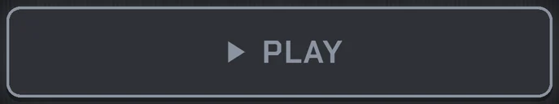
- While it plays, the display shows the section, the bar, four beat lights and the arrangement strip with a moving playhead.
- Tap ■ STOP to stop at once. There is no confirmation.
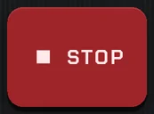
After your first STOP the app asks to allow notifications: say yes, so the lock-screen controls work.
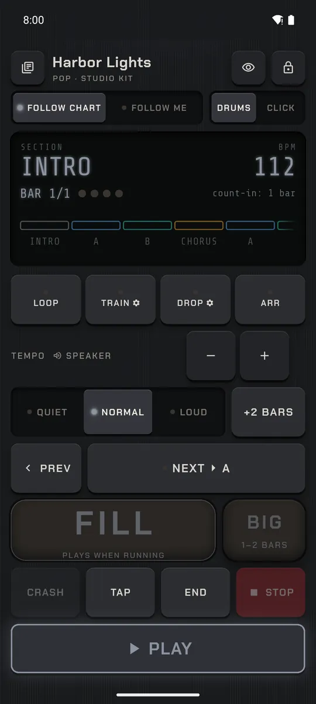
Follow chart or Follow me
One switch decides who moves between sections: the chart, or you.
- Find the switch under the song title. FOLLOW CHART is the default.
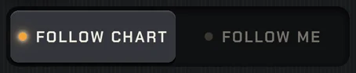
- Follow chart: tap PLAY and don't touch anything. Sections change by their bar counts, end fills and crashes happen by themselves, and the song stops on its ending.
- Follow me: tap the right half. Each section keeps looping (the display counts on: “BAR 9 of 8”) until you tap NEXT. When a section has run its length, NEXT glows blue and FILL gets hotter, as a reminder.
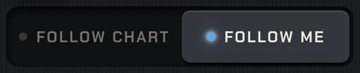
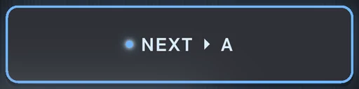
- You can switch mid-song; it takes effect at the next bar. The app remembers your choice for that song.
Default for new songs: Settings → Play screen → New songs start in.

FILL and BIG FILL
Fills that land where they should, every time.
- Tap FILL any time. The fill starts at the same position inside the bar, so it always lands on the next downbeat. Tap too late in the bar (under an eighth note left) and it waits for the next bar.
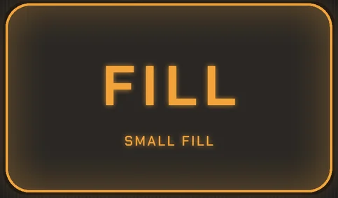
- Mid-section FILL plays a small fill; in the last bar of a section it plays a big one. Its label tells you which. Loud intensity makes fills bigger.
- BIG always plays a 1–2 bar fill with toms and a crash.
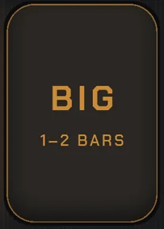
- Fills rotate, so you never hear the same one twice in a row.
In Follow chart the end fill before each section plays by itself; you only tap FILL when you want an extra one.
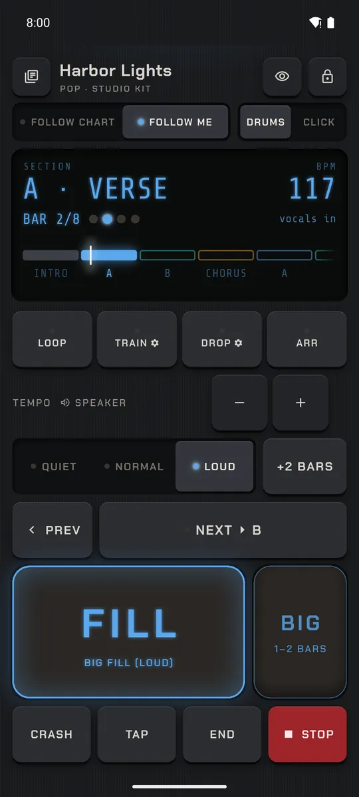
NEXT, PREV and jumping around
Move through the song; changes always wait for the bar line.
- NEXT moves to the upcoming section (its name is on the key) at the next bar line, with that section's end fill and crash.
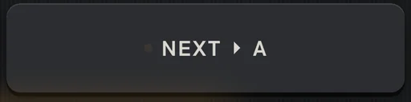
- PREV goes back one section.
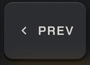
- Tap any block in the arrangement strip to jump there; while playing, the jump is queued to the next bar line.
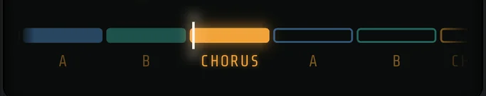
- While stopped, tap a block to set the start point: it highlights and PLAY starts from there. Tap it again to clear it.

+2 BARS: stretch a section
The band took one more round. Keep going without breaking the form.
- Tap +2 BARS to add two bars to the current section, this time through only. Tap again to add more.
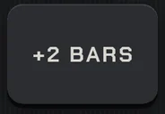
- In Follow chart this, plus LOOP, is usually all you need mid-song.
Want to stay in a section indefinitely? Use LOOP (see Practice).
END and endings
Finish like a drummer, not like a loop that ran out.
- Tap END: the song goes to its outro at the next bar line, plays the ending and stops by itself.
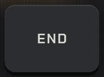
- Choose the ending style in the Song Editor's Ending tab: Fixed (play the ending, stop), Ring-out (a cymbal/tom roll until you tap END again; Follow chart cuts it after a few bars) or switch on Ritard to slow into the final hit.

- Need silence now? ■ STOP cuts immediately.
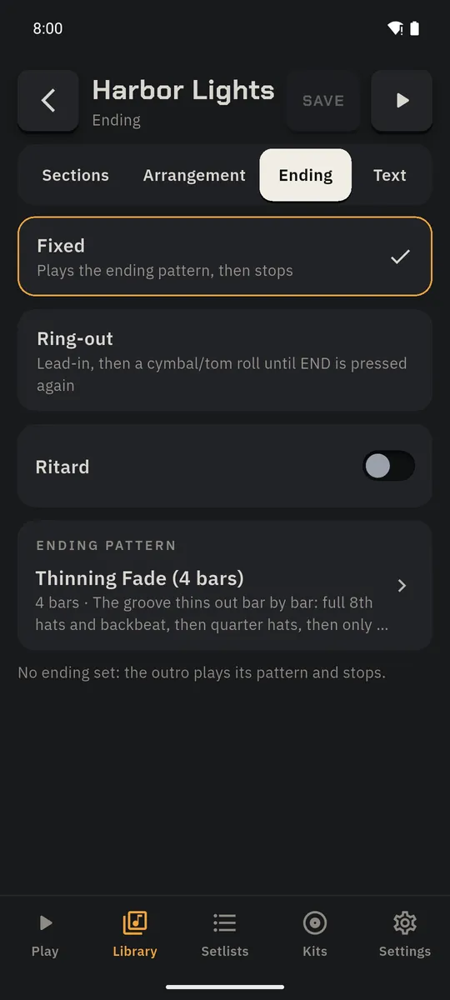
Quiet · Normal · Loud
Live dynamics with one tap, applied on the next beat.
- Tap QUIET, NORMAL or LOUD.
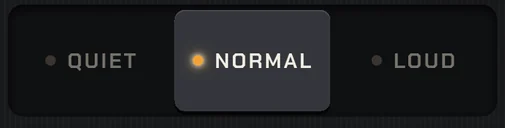
- Quiet plays softer, drops ghost notes and crashes, and closes the hi-hat. Loud hits harder, opens up the hats or moves to the ride, adds crashes and makes fills bigger. Many grooves have hand-written quiet and loud versions.
- Each section has its own default (choruses louder, breakdowns quieter); your choice holds until you change it or stop.
Tempo, TAP and CRASH
Set the tempo by ear, by number or by tapping.
- − / + change the tempo; tap the BPM number in the display to type one.
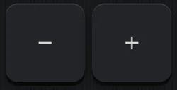
- TAP: tap it in time a few times to set the tempo.
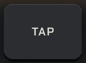
- CRASH adds a crash accent right now.
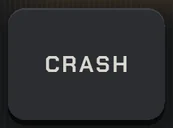
- If you changed the tempo, STOP shows a banner: Save to song, Save to setlist (in a set) or Just this time. It never interrupts playback.
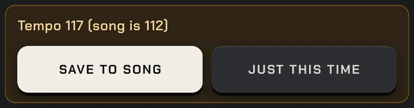

Practice: LOOP, TRAIN, DROP
Drill the hard part, speed it up, and check your own time.
- Tap the section you want in the strip (it's queued to the bar line), then tap LOOP: it repeats until you tap LOOP again.
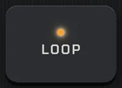
- Tap TRAIN to raise the tempo every few passes (default +5 BPM every 2 passes). The small ⚙ on the key opens its settings: step, passes and a cap.
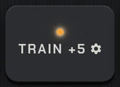
- DROP cuts the drums for random bars so you can test your own time; its ⚙ sets how often. A setting can keep the click going in the gaps.
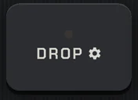
When you stop, save the faster tempo to the song with the banner, or keep it just this time.

Drums | Click, count-ins and the click
A metronome that knows the song form.
- Flip the header switch to CLICK for click only: no drums, but sections, count-ins, cues and tempo changes all stay.
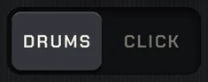
- Open Settings → Click & count-in for count-in length (off, 1 or 2 bars), the spoken count-in, accent on beat 1, the click sound (beep, woodblock, cowbell, side stick, hi-hat or a voice) and subdivisions.
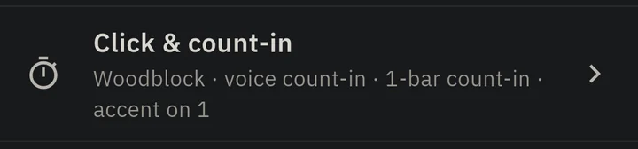
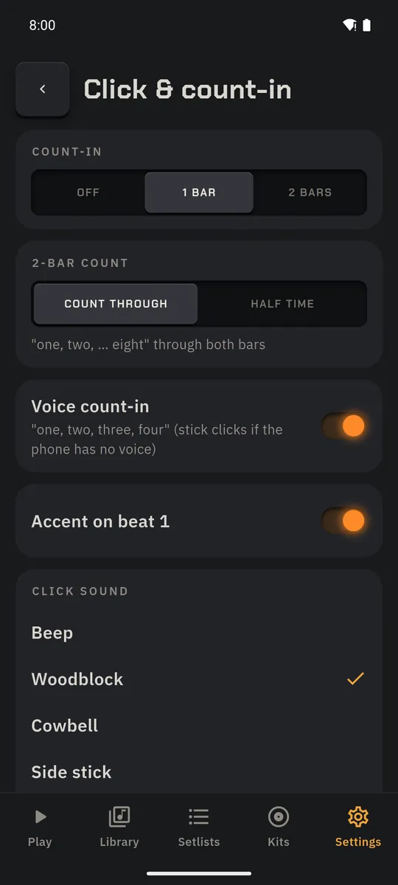
Quick arrange
Change the form while it plays.
- Tap ARR. The display turns into arrangement blocks.
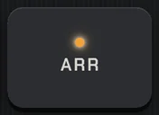
- Each block has − / + (bars), ×2 (duplicate) and DEL. Changes to upcoming sections apply while the song plays.
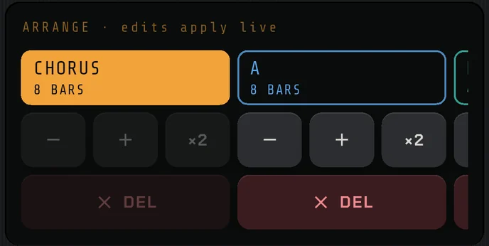
- Tap ARR again to finish.
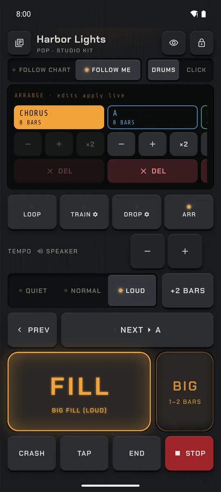
Band view
Point the phone at the band: a giant, high-contrast count they can read from across the stage.
- Tap the eye key at the top of Play. The screen goes landscape and full screen.
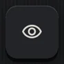
- It shows the beat number (the downbeat flashes the section colour), the section, bars left, the next section and countdowns like “STOP IN 2 BARS”. Flashes are shifted by the measured output delay, so they match what the band hears.
- FILL, NEXT and STOP stay along the bottom; × goes back.
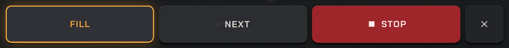

Stage lock
No accidental trips into menus mid-song.
- Tap the lock key (top right). The library key, the switches and the practice row disappear; every performance key still works.
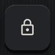
- To unlock, hold the lock key for one second.
Gig mode turns stage lock on for you.
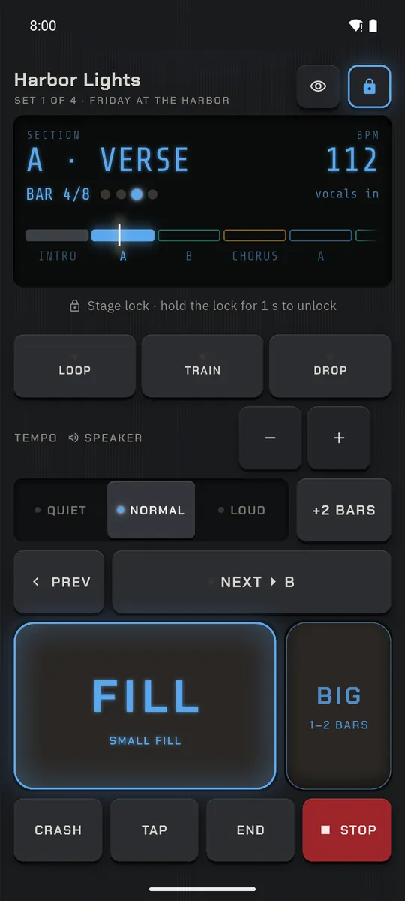
Screen-off and background playback
Pocket the phone; the drummer keeps going.
- Start a song with ▶ PLAY, then lock the phone or switch apps. Playback continues with a notification.
- The notification and lock screen have Play, Stop and Fill.
- Unplugging wired headphones or a phone call stops playback cleanly (it doesn't restart by itself).
The Play screen keeps the display awake while playing; Settings → Play screen can turn that off.